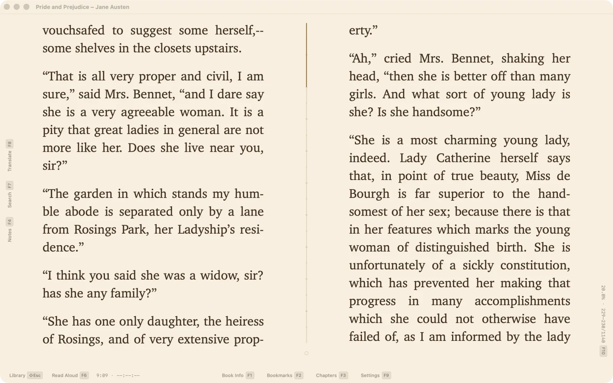

Where you are, and where you are going
The progress readout is yours to choose: a full line, just the percent, a segmented bar, or a round dial. In a two-page spread the reading line can stand in the gutter itself, between the pages, and fill as you read. Before you jump — from the progress bar, from a chapter, from a bookmark — a lens shows the text at the destination, so you never miss.


Chapters come as a filmstrip, the pictures of the book as a gallery panel, and search results as a numbered list with every hit marked on the page.